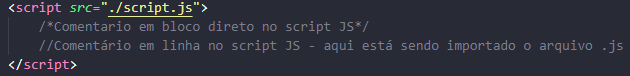

Pode-se criar uma tag * script * diretamente no arquivo html, mas seguindo as melhores práicas, o mais recomendado é importar o link de um arquivo .js pela tag * script src *, sempre no final do arquivo, logo antes da tag de fechamento do * body *.
Utilizar // para realizar um comentário em linha, e /* */ para adicionar um comentário em bloco, tanto dentro de um script no arquivo HTML, quanto no arquivo .js
Sempre que for criado um script (declaração de variável), um valor será atribuído a um tipo, que pode ser uma string (quando não se define que é um número), ou número, que pode ser apenas * Number *, ou * parseInt * para números inteiros sem casas decimais, * parseFloat * para número com casas decimais. Os valores booleanos true or false são condições que podem ser atribuídas a um número ou a um valor (string).
string - para textos
float - número
int - número inteiro
booleano - true or false
Não é necessário utilizar ; ou qualquer outro caractere para fechar a linha no script, basta pular para a próxima linha